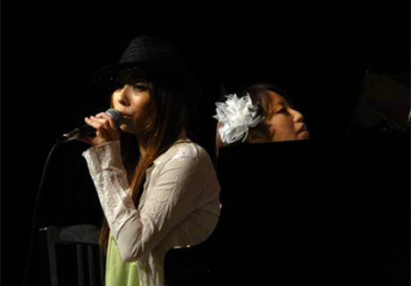
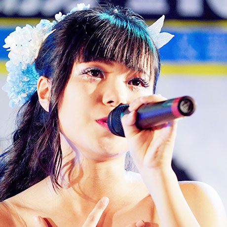
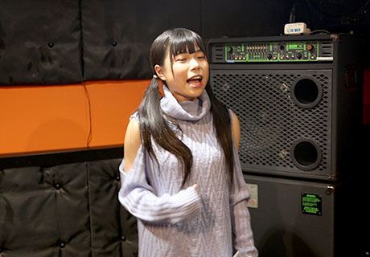
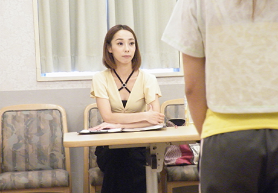
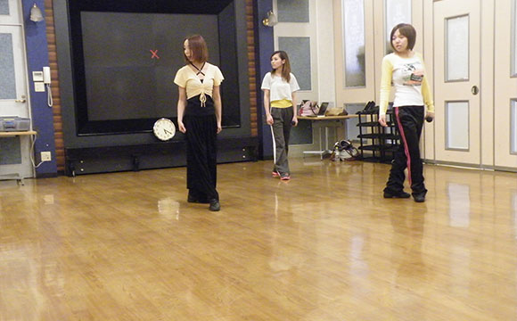
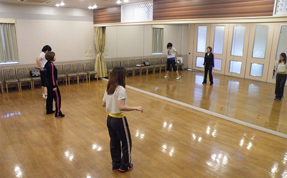
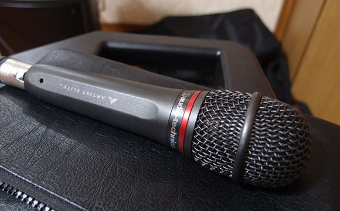
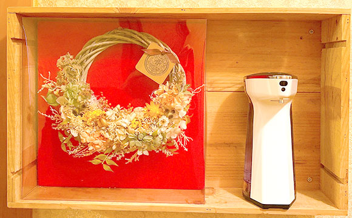
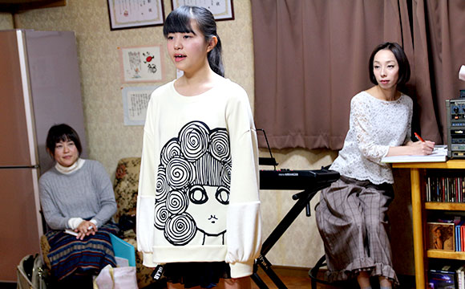

- TOP
- 初めての方・無料体験レッスンについて
ボイストレーニングにご興味がありますか？
～初めての方・保護者様へ・無料体験レッスンのご案内～
福岡の「Vocal school Pure breed（ピュア ブリード）」では、ボイストレーナー沖島ゆき による本格的なボーカルレッスン（ボイストレーニング・歌唱指導）を行っています。 プロを目指す方 から、趣味としてカラオケで上手に歌いたい方まで、また、10代～40代まで幅広い年齢の方がレッスンを受けていらっしゃいます。
ここでは、当スクールでボイストレーニングを受けてみたい方、歌手を目指したい方、プロを目指すためにレッスンを受けたいとおっしゃるお子様をお持ちの保護者様へ当スクールのレッスンについてご説明します。
保護者様へ～夢を叶えるためには？お子様の人生を大切に考えてみましょう～
いつの時代も、歌は最高のエンターテイメントです。だからこそ「歌手になりたい！」という夢を抱く年頃のお子様は、とても多くいらっしゃいます。ところが、保護者の方の中には「歌手なんて……」「もっと現実を見てほしい」「そんな才能がうちの子にあるかしら？」等と思う方もいらっしゃるでしょう。たしかに、プロの歌手の生活は身近に見られるものではありませんし、歌手としてデビューできるのはほんの一握りの逸材だけで、とても険しい道だということを大人として現実的にお考えだからだと思います。


実際に、テレビの歌番組に出演するような一流の歌手として収入を得られる確率は、とても低いのが現実です。また、一流はテレビに出なくても売れるので、宣伝としてプロダクション側がお金を払っているという事実と現実もあります。
リスクのある人生を選ばせたくないと思うのは、親ならば当然のことだと思います。
しかし、頭ごなしにお子様の夢を否定してしまうことも、親心として躊躇されていることもあられるのではないでしょうか？
気まぐれな思いつきではないか？生半可な気持ちではないか？情熱はあるか？覚悟はあるのか？……若いお子様の「本気度」を確認することは、大変難しいことです。
保護者様の立場であれば、なおさらその難しさを実感されていらっしゃることでしょう。
それならば一度、Pure breedと一緒にお子様の気持ちに寄り添って考えてあげてみてください。
お子様の今の気持ちや、これからの成長を信じて、サポートすることも
子育てにおいて大切（必要）なポイント（要素）ではないでしょうか。
Pure breedでは、実際に保護者様、お子様と話し合いながら、双方のご意見を大切にメンタルケアしつつ、将来について一緒に寄り添い、サポートしていくことも心掛けております。

当スクールには、趣味でボイストレーニングコースのほか、プロ養成コースもございます。正直に申し上げて、プロを目指す子への指導は、厳しいです。生半可な気持ちや中途半端な努力ではプロにはなれないからです。また、当スクールでは、プロ養成コースを希望する子には、ルックス・基本的な音楽スキルなどの才能、本気度を見極めてからコース選択を提案しています。将来性に乏しいと感じた場合には、無理に努力をしても時間とお金の浪費に終わってしまうことが多々あるからです。また逆に、趣味でボイトレコースの努力を重ねることで才能が開花し、プロとしての結果に結びついた生徒様もいらっしゃいます。
お子様の気持ちと成長、努力などがうまく結びついたときに、将来の姿が見えてくるものだと考えます。

当スクールのレッスンでは、歌唱力だけでなく、挨拶などのマナー指導やMC指導、ステージング、ウォーキング、ボディ・メンタルケア、そしてイベントやオーディションへの参加・斡旋なども行っています。
一人ひとりの生徒様の目標や夢に合わせて、基本的にマンツーマンで指導させていただいております。
プロになれなかったとしても、人生において無駄な努力だったとは思わせない指導をさせていただきます。まずは、お子様のお気持ちを汲み取って、しっかり話し合いをしたうえで、お申し込みください。
ボーカルレッスンでは何をするの？
ボイストレーニング、ボイトレ、ボーカルレッスンなど、さまざまな呼び方がありますが、Pure breed（ピュア ブリード）では、声の出し方の基礎を身につけるボイストレーニングと、歌の内容まで考慮する歌唱指導を含めた内容で、レッスンを行っています。また、ステージ上での動きを自然で洗練されたものにする ステージングやプロを目指す生徒さんを対象にメンタルトレーニングに触れることもあります。
ボーカルレッスンで行う内容
下記内容は概要です。いずれも、マンツーマンレッスンで、生徒さんにとって今一番必要な練習内容をオーダーメイドで組み立て、指導していきます。
| ボイストレーニング | 歌唱指導 |
|---|---|
| 姿勢、腹式呼吸、リズムトレーニング、喉（声帯・共鳴腔）の使い方、発声の基礎トレーニング、音感トレーニング、裏声（ファルセット）、ミックスボイスの出し方、発音・滑舌のトレーニング…等 | 課題曲の指導、リズム・メロディーに合わせた発声方法、言葉の表現方法、身振り手振り（※楽曲によってはがっつりダンスが入る場合もございます）などのステージング指導、レコーディング、イベントやオーディションに備えたさまざまなアドバイス…等 |
| ボイストレーニング | |
| 姿勢、腹式呼吸、リズムトレーニング、喉（声帯・共鳴腔）の使い方、発声の基礎トレーニング、音感トレーニング、裏声（ファルセット）、ミックスボイスの出し方、発音・滑舌のトレーニング…等 | |
| 歌唱指導 | |
| 課題曲の指導、リズム・メロディーに合わせた発声方法、言葉の表現方法、身振り手振り（※楽曲によってはがっつりダンスが入る場合もございます）などのステージング指導、レコーディング、イベントやオーディションに備えたさまざまなアドバイス…等 |
レッスンギャラリー
{kind=link}
{kind=link}
{kind=link}
{kind=link}
{kind=link}
{kind=link}
{kind=link}
{kind=link}
PICK UP！当スクールの新型コロナウィルス感染予防の取り組み
Pure breed（ピュア ブリード）では、国の「新型コロナウィルス感染拡大予防ガイドライン」に準じ、次のような取り組みを行っています。
※表は左右にスクロールして確認することができます。
| 3密の回避 | ||
|---|---|---|
| ソーシャルディスタンス | 換気 | 鏡越しでのレッスン |
|
 |
|
 |
| 前後左右2ｍの距離を確保してレッスンを行います。基本的にマンツーマンレッスンで、密を避けています。 | 密閉状態になりやすかったスタジオでも、湿度の調整や換気などの空気調和を徹底しています。 | これまでの向かい合うレッスンではなく、鏡越しでの発声やアドバイスを現状の礼としています。 |
| 体調管理 | 機材消毒 | 手指消毒 |
|
|
 |
 |
| 講師をはじめ生徒さん、スタッフ全員に、検温はじめとする体調チェックを行っています。教室前には検温・消毒器を設置。自動ですので、触れることなく検温・消毒できます。 | レッスンで使用するマイクや譜面台は、生徒さんが入れ替わるたびに80vol%のアルコールで消毒を行っています。 | 入室前に必ずアルコールで手指消毒を行っていただきます。こちらも自動でアルコールが噴出されるものですので、どなたも触れることなくお使いいただけます。 |
無料体験レッスンについて
福岡のボイストレーナー「沖島ゆき」がレッスンをするVocal school Pure breed（ピュア ブリード）では、ボイストレーニングにご興味がある方や、お試しでレッスンを受けてみたい方へ向け、無料体験レッスンを行っています。
当スクールでは、プロ養成コース で歌手を目指す生徒さんの指導に力を入れていますが、趣味で歌を楽しみたい、カラオケで上手に歌いたいという方に向けた 趣味でボイトレコース も行っています。入会時には生徒さんのご希望に合わせてコースをお選びいただけますし、その後、気持ちが変わってコースを変更することも可能です。指導内容は、その人に合わせてオーダーメイドで組み立てていきますので、基本的にはいずれも同じとお考えください。

ボイトレではどんなことをするのか、沖島ゆきの指導がどのようなものかを知りたい方は、
是非、お気軽に無料体験レッスンをお試しください。
お試しレッスン後に必ず入会しなければならないといったことはございません！
どうぞお気軽にお申し込みください。
無料体験レッスンの流れ
- STEP1お申し込み・ご予約
- まずはお気軽に、お問い合わせ・ご入会のお申し込み からご連絡ください。ご都合のよい日時や場所を調整いたします。現在は、田川クラス・PROGRESSクラスで無料体験レッスンを行っています。なお、福岡Sound Boogieクラス、北九州Sound Boogieクラスでの体験レッスンは、スタジオ代として5,000円が発生いたしますのであらかじめご了承ください。
- STEP2カウンセリング
- 「どんなアーティストやどんな歌が好きか」、「これまでにどんな音楽経験（ピアノや読譜、楽器演奏）があるか」、「歌で苦手なところや伸ばしていきたいところは何か」、「こんなアーティストになりたい」といったイメージがあればお聞かせください。体験レッスンの参考にします。
- STEP3好きな曲をフルコーラス（マイク無しのアカペラ）で歌う
- お好きな楽曲・得意な曲をマイク無しのアカペラでフルコーラス歌っていただきます。リラックスして自由に歌っていただいて結構です。キーボードやギターなど、楽器の持ち込みもOKです。うたっていただき「声質・のどの位置・リズム感のチェック」、「得意なポイント・苦手なポイントのチェック」を行っていきます。
- STEP4アドバイス
- 自由に歌っていただいた後に、課題や改善点についてアドバイスを行います。
- STEP5腹式呼吸と胸式呼吸の違い
- 腹式呼吸と胸式呼吸の違いについて説明し、「どちらの呼吸が課題となる歌唱に適しているか」、「肺への酸素の取り入れ方」、「ブレスの大切さ」など、呼吸法について理解を深めていただきます。
- STEP6腹式呼吸のレクチャー
- 様々なイメージトレーニング、レクチャーを基に、腹式呼吸の具体的なレクチャーを行います。「ろうそくの火をイメージして、さしすせその「す」で息を吐き切り、ろうそくの炎を揺らすイメージ」、「好きな香りを味わうように鼻からゆっくり息を吸う」など、イメージしやすい例えを使いつつレクチャーしていきます。
- STEP7横隔膜のストレッチ
- 楽に腹式呼吸ができるよう、横隔膜のストレッチ方法をレクチャーします。横隔膜を下に下げて、より酸素が入りやすい状態を作ります。
- STEP8発声練習「ハミング」「あ」
- ストレッチが整ったら、喉の使い方を習得して、楽に声を響かせることができるようにします。
- STEP9一番最初に歌った曲を1コーラス歌う
- もう一度、始めに歌っていただいたのと同じ曲を歌っていただき、違いを実感していただきます。
- STEP10お疲れ様でした♡
- 最後に、残った課題や今後取り組むとよい練習方法についてアドバイスいたします。受講者様にとって、今一番必要とされる練習方法についてもご説明します。